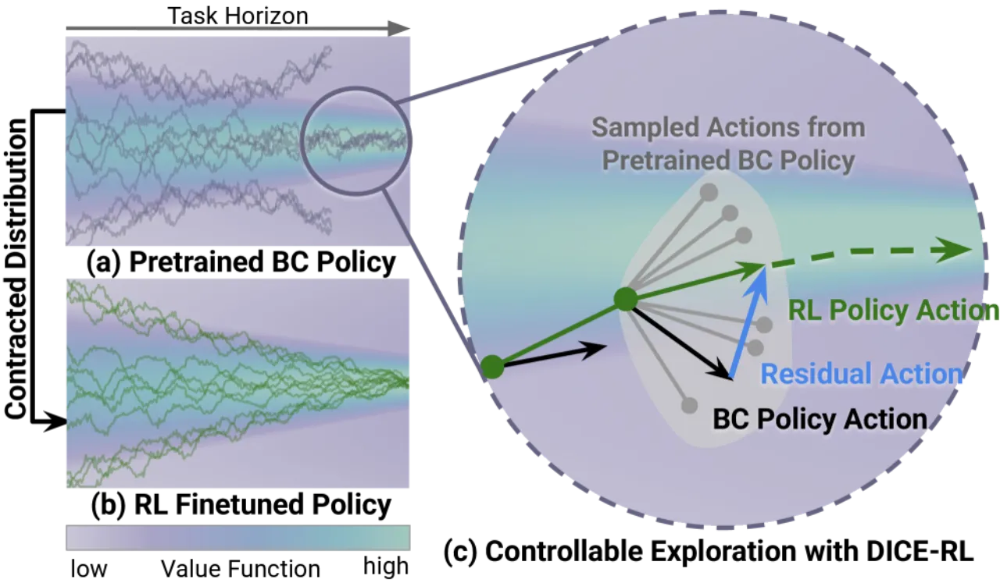
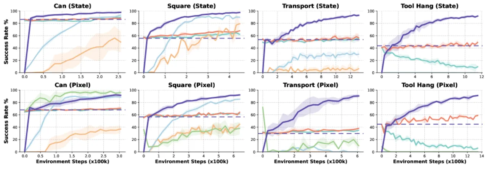
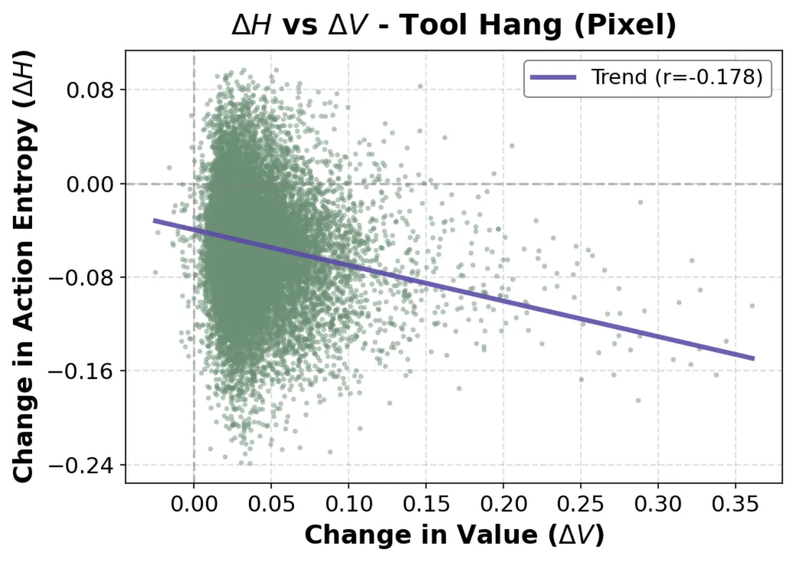
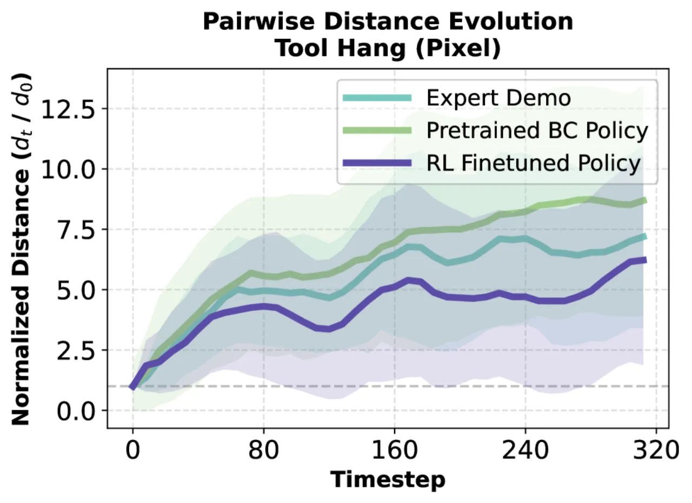
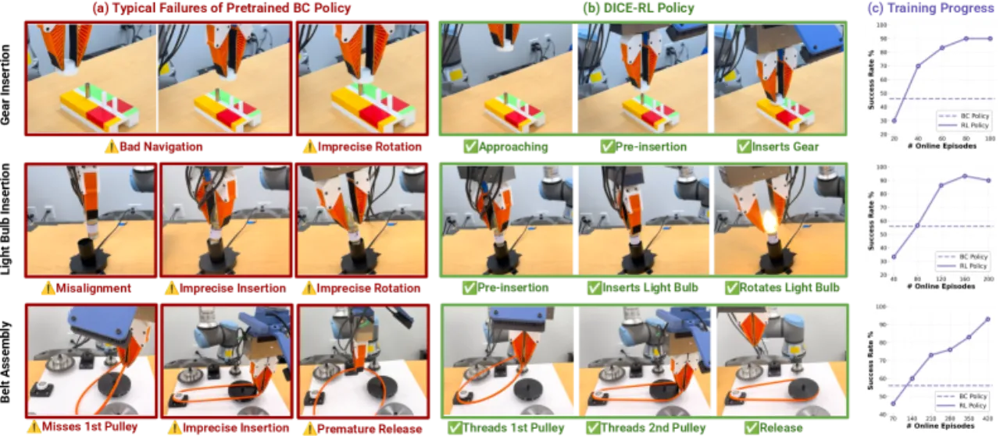
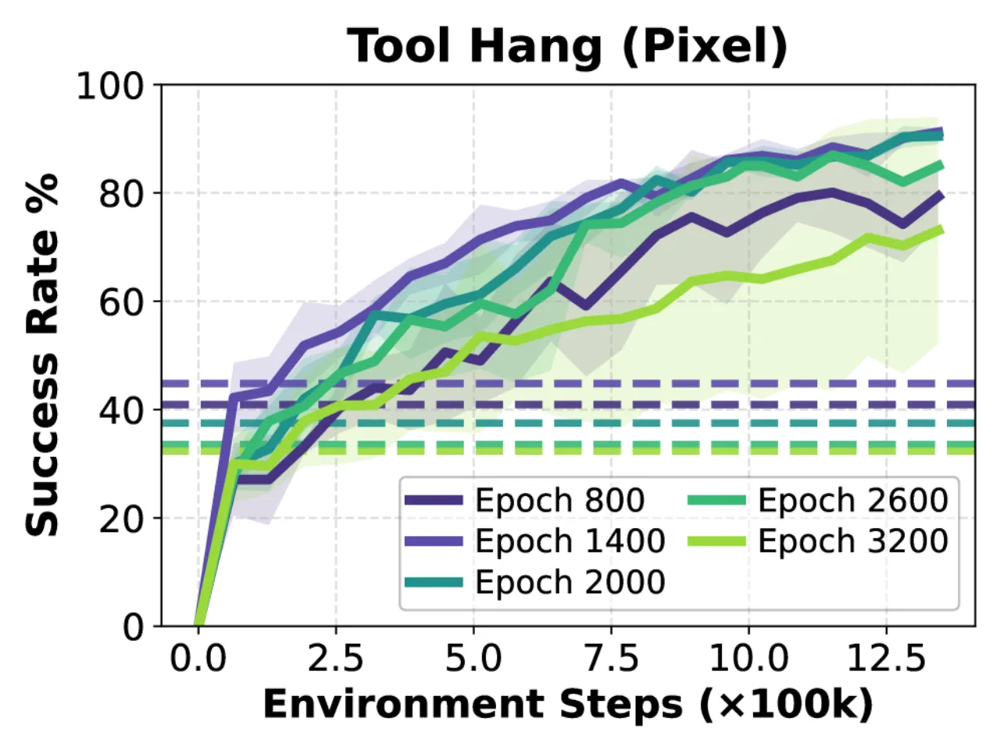

DICE-RL 把 RL 看作作用在预训练生成式 BC 策略上的“distribution contraction”算子：从一个已经能产生 physically plausible 行为的 behavior prior 出发，用在线反馈把动作分布向高成功率的模式“收缩”，而不是自由漂移。它冻结预训练 diffusion/flow 策略、只学一个轻量 residual 校正，配合选择性行为正则与价值引导动作选择，在仿真与真实机器人上稳定、样本高效地把 prior 变成 pro。
在 sparse-reward、long-horizon 的操作任务里，在线交互昂贵、无约束探索不可行。论文主张：此时 RL 最有用的角色不是从零学，而是在一个预训练生成式 BC 策略之上做“分布收缩器”——利用在线反馈重加权动作分布，提升 high-success 行为、抑制 failure-prone 行为。这一视角直接类比 LLM 的 post-training：RLVR 通过放大满足任务检验的回答来 sharpen 预训练模型。
“RL is most effective and practical when used as a ‘distribution contractor’ on top of a pretrained generative behavior cloning (BC) policy … increasing the probability of high-success behaviors while suppressing failure-prone ones.”
把这一思路搬到机器人并不平凡：动作空间连续、verification 需要真实执行、reward 延迟、horizon 很长。因此有效微调需要两个前提：(1) 一个覆盖可行解（哪怕不够精确）的预训练策略；(2) RL 的改进发生在预训练 support 内的“行为收缩”，而非任意漂移。

DICE-RL 分两阶段。预训练：在离线示范上训练一个 diffusion 或 flow-matching 的 BC 策略，用 early stopping 避免过拟合、保留动作多样性，得到一个能表达复杂动作分布、支持随机推理的 behavior prior。微调：冻结该 prior，只学一个轻量 residual，用稳定、样本高效的 off-policy actor-critic 框架来做“选择性行为正则 + 价值引导动作选择”。
动作 chunk 写作 at:t+h-1 = πpre(st, z) + sθ(st, z)，其中 πpre 是冻结的 flow/diffusion 策略、sθ 是可学习残差，z~N(0,I) 是隐变量。冻结 prior 让探索始终落在 physically plausible 的支撑内；action chunking（h 步分组）改善 long-horizon 下的 credit assignment，同时复用预训练的观测编码器提取状态特征。
用一个 filtered BC-style 残差正则 LBC 鼓励在高价值区域贴近 prior，但当残差产生“确信可提升价值”的动作时放松惩罚。关键的 BC-loss filter 定义为
Filter(s,z;ε) = 𝕀[ Qφ(s,acur) ≥ Qφ(s,apre) ∧ Qφ(s,acur) − Ĝ(s) ≤ ε ]，
其中 Ĝ(s) 是来自 replay 的 Monte-Carlo return 估计，ε 是一个小负常数。第二个条件用真实回报“把关”，防止残差去利用 Q 函数的 overestimation。只有同时满足“比 prior 更优”且“不超出真实回报太多”时才免除 BC 惩罚。
在线交互时对每个状态采样 K 个隐变量 {zk}，形成 K 个候选 chunk，执行 critic Qφ 打分最高的那个（best-of-N 动作选择）。训练目标也在 K 个隐样本上取期望（multi-sample expectation training）：actor 损失 LRL(θ) = −(1/K)Σk Qφ(st, at:t+h-1(k))，从而在“分布层面”优化并降低梯度方差。
Critic 用 h 步 TD 目标、并对下一状态的 K 个候选取平均值来 bootstrap；采用 ensemble critic（多个 Q 取 min）抑制 overestimation。Adaptive RLPD mixing 以随时间衰减的比例 roffline(t) 从 Ddemo 与 Donline 混合采样，从“离线为主”平滑过渡到“纯在线微调”。整体流程见论文的 Algorithm 1（DICE-RL）。
仿真基准：Robomimic 的 Can / Square / Transport / Tool Hang（state 与 pixel 两种观测），以及附录里的 LIBERO-10 多任务基准。真机：NIST 装配基准的 3 个 contact-rich 任务。指标为“成功率 vs. 在线环境步数/回合数”，Robomimic 曲线在 5 个 seed 上平均。
在 8 个 task×观测组合上，DICE-RL（深紫）相对预训练 BC 基线（虚线）都取得稳定提升，尤其在最难的 Tool Hang（state/pixel） 上把成功率推到约 90%，而多数 baseline 在此停滞。对比方法包括：IBRL（在 BC 与 RL 动作间按 Q 取优，不利用 diffusion prior）、DPPO（把去噪链当内层 MDP、用 PPO 在线微调 diffusion 策略）、EXPO（学一个 Gaussian edit policy 局部修正采样动作 + 熵正则）、DSRL（在 latent noise 空间做 RL）、ResFit（冻结 chunk BC、学 per-timestep 残差但不含 BC 正则）。



三个高精度接触任务：GearInsertion（把齿轮插到金属杆，容差 ≈1 mm、有视觉遮挡）、LightBulbInsertion（先插灯泡再旋转约 360° 点亮）、BeltAssembly（把已抓住的橡胶带绕过两个滑轮穿装，刚柔耦合、最难）。用 kinesthetic teaching 分别采集 40 / 100 / 265 条示范预训练 diffusion 策略。RL 阶段由人给二元成功/失败奖励、每 10 个在线回合做一次 batched 更新，actor 与 learner 异步。每个 checkpoint 用 30 trials 评估。预训练 BC 存在明显失败模式（如 BeltAssembly 提前松手、seat 不到位；Gear/Bulb 接近导航差、插入不准），RL 微调后三任务均可靠成功（成功率曲线见 Fig. 8(c)）。

三个设计选择——(i) BC-loss filter、(ii) multi-sample expectation training（K 越大收敛越快）、(iii) best-of-N 动作选择——都能加速收敛并提升峰值性能。更换 backbone（diffusion vs. flow matching）DICE-RL 均稳定且样本高效。预训练 epoch 的消融（下图）表明 early stopping 很关键：训练过久的 checkpoint 起点更低、可微调性更差。LIBERO-10 多任务上 DICE-RL 在样本效率上优于 DSRL，并可与预训练 π0 模型集成。

论文指出：策略可能继承数据集偏置、并在 distribution shift 下表现出不安全行为；在 safety-critical 部署前需要配合安全防护做审慎评估。
方法把 RL 定位为在 prior 支撑内的“分布收缩”。若预训练策略根本不覆盖可行解，收缩就无从产生正确模式——性能上限受 behavior prior 的覆盖度与 early-stopping 质量制约。
真机设置需要人给二元奖励、判定失败并做 reset；虽用异步 learner/actor 降低 wall-clock，但仍是有人在环、成本随任务复杂度上升。
作者把“在保持行为多样性的前提下扩展到大规模多任务 VLA 策略”，以及“对稳定性/样本效率的更深理论保证”列为未来工作，说明当前结论主要建立在单技能/有限多任务规模上。